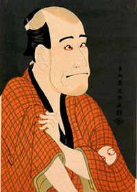
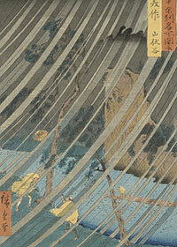
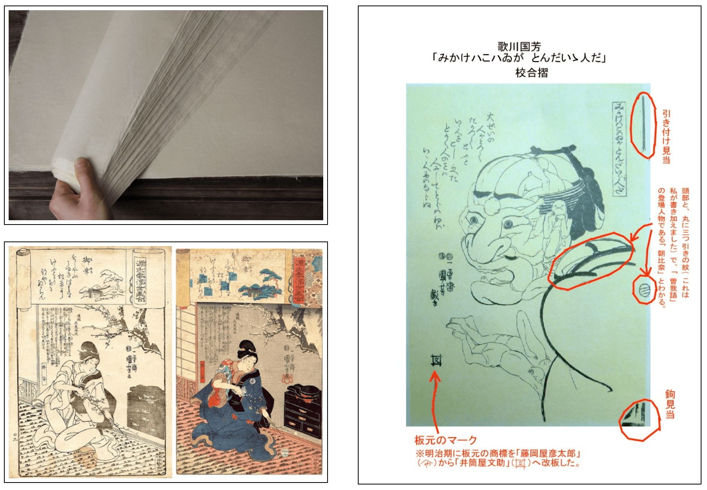
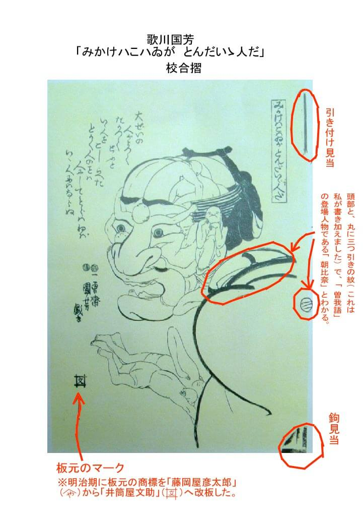
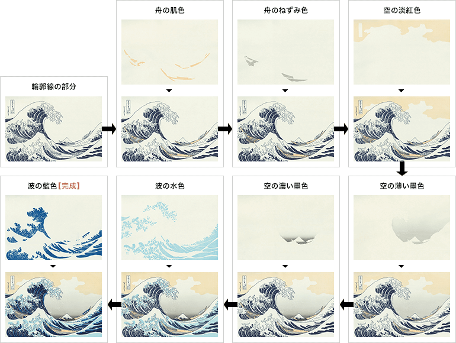
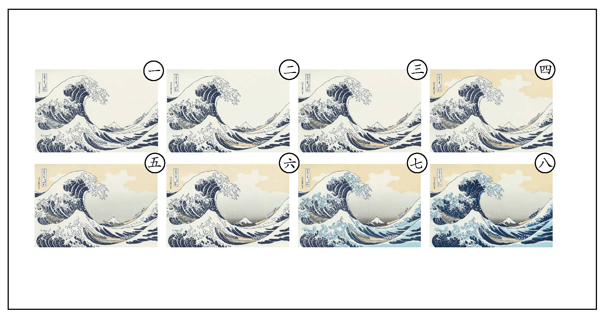

由原畫師構思設計，然後以黑色描繪輪廓。古時此步驟完成後即需送交幕府審查內容。審查通過的話，幕府就會蓋上合格印記。 當時浮世繪創作題材多元，依照類型大致可分為以下幾種：
- 美人繪：美人畫以年輕美麗的女子為題材。主要是描繪遊女（妓女）和茶屋的人氣看板娘（招
牌女郎），後來也有街頭美女的題材。
- 美人繪：美人畫以年輕美麗的女子為題材。主要是描繪遊女（妓女）和茶屋的人氣看板娘（招牌女郎），後來也有街頭美女的題材。
- 役者繪: 以著名的歌舞伎演員為題材。肖像畫與廣告傳單的形式都有。
- 名所繪: 除了滿足當時無遷徙自由的民眾對名山秀水的憧憬之外，也有做為旅行手冊的應用。
- 花鳥繪: 以花、鳥、蟲、魚、獸為題材。
美人畫以年輕美麗的女子為題材。主
要是描繪遊女（妓女）和茶屋的人氣
看板娘（招牌女郎），後來也有街頭
美女的題材。
以著名的歌舞伎演員為題材。肖像畫
與廣告傳單的形式都有。
除了滿足當時無遷徙自由的民眾對
名山秀水的憧憬之外，也有做為旅行
手冊的應用。
以花、鳥、蟲、魚、獸為題材。


雕刻墨板
審查過的原圖交給雕版師後，雕版師會將原圖反過來貼在山櫻木製的木板上並浮雕出圖案，此板即稱為墨板。為應付將來反覆印刷、多次上色的製程需要，日本人發明了標示「見當（記號之意）」的方法。該方法的起源有二處： 1744年出版物批發商上村吉右衛門所發明。 1765年一名叫做金六的刷版師所發明。
何謂見當：
見當是一種對點技藝，為了讓每張版木都可以準確地拓印在紙上，浮世繪技師在版木兩角上刻上『見當』兩字當作基準點，在拓印時 對照兩字。確保浮世繪印出來的品質合乎標準。(參考至GOOGLE圖書 )
見當是一種對點技藝，為了讓每張版木都可以準確地拓印在紙上，浮世繪技師在版木兩角上刻上『見當』兩字當作基準點，在拓印時 對照兩字。確保浮世繪印出來的品質合乎標準。(參考至GOOGLE圖書 )

▲ 師傅正在雕刻木板
選定色彩
墨板交給刷版師後，刷版師會用薄美濃紙印出做為雕刻色板的底圖之用的校合摺數張，張數則依原畫師計畫使用的顏色數目而決定。原畫師會在校合摺上以紅筆指定心中所構思的色彩。


◀︎(左上)本美濃紙 ◀︎ ▼(左下 右側)校合摺
▲校合摺
雕刻色彩
校合摺交給雕版師後，雕版師會以同樣的方法雕出所需的色板。色版會隨著畫面構成分成多塊色版，並於後續加工層層堆疊上去。以下圖的<神奈川沖浪裏>為例，海浪部分除了藍色部分外，浪花部分還需要其它色版相輔相成。
 ▲分層色版介紹
刷版
墨板和色板都到齊後，刷版師便開始一色一色反覆印刷上色。依畫面所用的顏色多寡，印刷次數也不同，一般約需刷10到20多次。色彩重疊的部份以由淡而濃、由小（面積）而大的原則處理。下圖所示，先從淡色版先刷，最後再刷到最深的黑色(深藍色)色版。

▲刷版順序